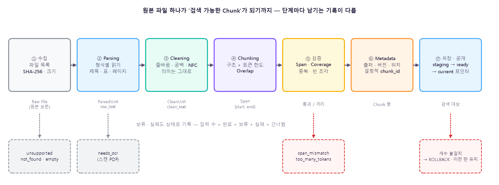
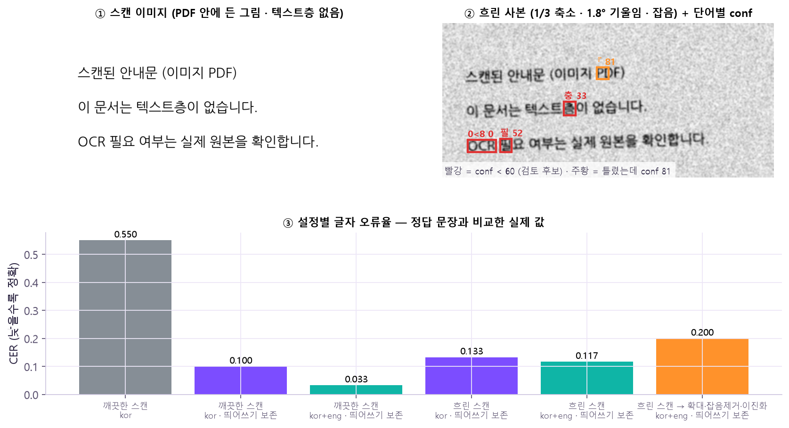
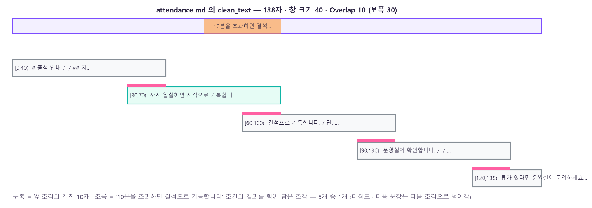
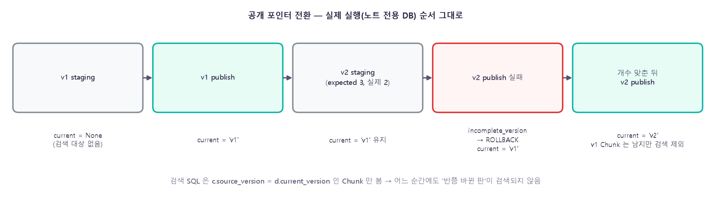

- Document Ingestion = 원본 파일을 수집 → 읽기(Parsing) → 정리(Cleaning) → 나누기(Chunking) → 검사 → 출처 붙이기 → 저장 · 공개해서 "검색할 수 있는 조각"으로 만드는 전체 과정. 단계마다 결과를 따로 남겨, 문제가 생기면 어느 단계 탓인지 되짚을 수 있게 해요.
- Chunk는 답이 들어 있는 단위로 나눠요. 고정 글자 수로 자르면 "10분을 초과하면 | 결석"처럼 조건과 결과가 갈라져요. 제목 · 문단 같은 구조를 먼저 따르고, 길이는 그 모델의 Tokenizer로 센 최종 입력으로 검사해요.
- 검색 대상은 검증이 끝난 현재 공개 버전만. 새 버전은 다 적재 · 확인한 뒤 한 트랜잭션으로 공개 포인터를 바꿔요. 실패하면 이전 판이 그대로 검색돼요.
🗺️ 큰 그림 — 원본 파일이 검색 가능한 Chunk가 되기까지

Embedding · Vector Search는 이미 정리된 짧은 지식 문장을 벡터로 바꿔 찾았어요. 실제 자료는 PDF · Markdown · HTML 같은 파일이라, 그 사이를 잇는 과정이 필요해요.
| 단계 | 하는 일 | 핵심 질문 |
|---|---|---|
| ① 수집 | 파일 목록 · 원본 바이트 · SHA-256 | 무엇을 처리했고, 원문이 바뀌었나? |
| ② Parsing | 형식별로 텍스트와 구조 꺼내기 · 스캔은 OCR — 실제 출력 사례 5개 | 그대로 읽으면 무엇이 섞이고 무엇이 깨지나? |
| ③ Cleaning | 줄바꿈 · 공백 · 유니코드 정리 — Before / After | 잡음만 지웠고 의미는 그대로인가? |
| ④ Chunking | 검색 단위로 나누기 — 고정 창 vs 구조 분할 실제 비교 | 질문의 답이 한 조각에 같이 들어 있나? 모델 한도 안인가? |
| ⑤ 검증 | Span · Coverage · 중복 · 빈 조각 — 일부러 넣은 실수로 확인 | 조각이 원문과 정확히 대응하고, 빠진 곳이 없나? |
| ⑥ Metadata | 출처 · 버전 · 위치 · 결정적 ID · 필터 순서 | 이 조각은 어느 문서 어느 판의 어디서 왔나? |
| ⑦ 저장 · 공개 | staging → 확인 → 공개 포인터 전환 | 반쯤 적재된 판이 검색되지 않나? |
| ⑧ 전체 연결 | 문서 6건 처리 보고서 · 실패 범위 · 인용 ID | 다음 단계(RAG)가 받을 결과는 무엇인가? |
원본 파일 (data/raw) ← 절대 덮어쓰지 않음
→ ParsedUnit raw_text (페이지 · 절 단위, source_locator)
→ CleanUnit clean_text (cleaner_version · clean_hash)
→ Chunk body = clean_text[start:end] + Metadata + chunk_id
→ 벡터(E5 384차원) → PostgreSQL + pgvector (staging → ready → current)예제 문서 6건
아래 설명과 실행 결과에 쓰는 가상 안내 문서예요(실제 기관 규정 아님). 크기는 실제 파일 바이트.
| doc_id | 파일 (바이트) | 형식에서 볼 것 | 처리 결과 |
|---|---|---|---|
| DOC-ATTEND | attendance.md (328) | 제목 · 문단 · 숫자 · 예외("단,") | parsed |
| DOC-ASSIGN | assignment.txt (267) | UTF-8 · 줄바꿈 | parsed |
| DOC-FACILITY | facility.html (728) | main 영역 · 메뉴 · 스크립트 · 표 | parsed |
| DOC-CAREER | career.pdf (36,195) | 페이지 · 쪽번호 | parsed (2페이지) |
| DOC-SCAN | scan.pdf (34,629) | 글자가 이미지 | needs_ocr 보류 |
| DOC-UNSUPPORTED | unsupported.xyz (62) | 지원하지 않는 형식 | unsupported |
개정본 attendance_v2.md는 "10분" 기준을 "15분"으로 바꾼 같은 문서의 v2예요(⑦ 공개 전환에서 사용).
① 수집 — 원본을 보존하고, 무엇을 처리했는지 기록
Raw File과 Derived Data는 따로
| 단계 결과 | 남기는 것 | 왜 |
|---|---|---|
| Raw File | 원본 바이트 · 경로 · 확보 시점 · raw_sha256 | 원문이 바뀌었는지 판단하는 기준 |
| ParsedUnit | 페이지 · 절에서 꺼낸 raw_text · source_locator | 파서를 바꿨을 때 비교 |
| CleanUnit | clean_text · cleaner_version · clean_hash | 정제 규칙을 바꿨을 때 비교 |
| Chunk | 본문 · 문자 위치 · Metadata · 벡터 | 검색 · 인용 단위 |
정제 결과로 원본을 덮어쓰면, 나중에 파서나 규칙이 바뀌었을 때 무엇이 원래 내용이었는지 알 수 없어요.
Manifest — 원본 기록표
raw = path.read_bytes()
record = {"doc_id": "DOC-ASSIGN", "source_version": "v1", "source_uri": path.as_uri(),
"size_bytes": len(raw), "raw_sha256": sha256(raw).hexdigest(), "status": "collected"}실제 실행: assignment.txt는 267바이트(한글 113자), 해시 722ed29e5256a35c…. 끝에 공백 1바이트만 더해도 f9ef6f5b571b1ff9…로 완전히 달라져요.
- SHA-256은 "바이트가 같은가"만 알려 줘요. 의미가 비슷한지, 같은 출처인지는 몰라요.
doc_id·source_version은 파일 이름이나 해시로 자동으로 정해지지 않아요 — 원문 관리 규칙으로 정해요.- 파일 이름이 같아도 같은 원문이라는 보장이 없어요 → 버전 · 해시로 비교.
수집 성공 ≠ 파싱 성공 — 상태를 한 번씩 집계
| 상황 | 상태 | 다음 동작 |
|---|---|---|
| 파일 없음 | not_found | 경로 · 수집 목록 확인 |
| 권한 없음 | read_error | 접근 권한 확인 (자격 증명은 로그에 남기지 않음) |
| 지원 외 형식 | unsupported | 원본 보존 · 지원 여부 검토 |
| 0바이트 | empty_file | 본문 없음 · 보류 |
| 스캔 PDF | collected → needs_ocr | 수집은 정상, Parsing만 보류 |
입력 수 = 완료 + 보류 + 실패 + 건너뜀이 맞아야 해요. 예제 6건이면 parsed 4 · needs_ocr 1 · unsupported 1. 빠진 파일이 조용히 사라지면 "검색에 없는 이유"를 아무도 설명할 수 없어요.
② Parsing — 실제로 읽으면 이렇게 나온다
Parsing은 파일 형식을 해석해 텍스트와 함께 제목 · 문단 · 표 · 페이지 같은 구조를 꺼내는 일이에요. 규칙을 외우기보다, 예제 문서를 그대로 읽었을 때 실제로 무엇이 나오는지 보고, 무엇이 문제인지, 어떻게 고치는지 순서로 볼게요. 아래 출력은 모두 실제 실행 결과 그대로예요.
| 형식 | 도구 | 그대로 읽으면 생기는 문제 (아래 사례) |
|---|---|---|
| TXT | bytes.decode("utf-8") | 인코딩이 틀리면 글자가 깨지거나 조용히 사라짐 |
| Markdown | markdown-it-py | 제목과 본문의 소속이 사라짐 · 코드 속 #를 제목으로 착각 |
| HTML | Beautiful Soup | 메뉴 · 꼬리말 · 제목 중복이 섞이고, 표가 칸 단위로 흩어짐 |
| 텍스트 PDF | pypdf | 쪽번호 · 머리말이 본문에 섞임 |
| 스캔 PDF | pypdf → OCR(Tesseract) | 텍스트가 0자 → OCR 결과는 띄어쓰기 · 오인식투성이 |
사례 1 · TXT — 인코딩을 명시하고 실패를 숨기지 않기
bytes.decode("utf-8") 명령어 사전에서 자세히 →try: text = raw.decode("utf-8")
except UnicodeDecodeError: status = "decode_error"| 입력 (실제 실행) | 결과 |
|---|---|
| assignment.txt | parsed · 113자 / 267바이트 (한글 1자 = 3바이트) |
| 끝이 잘린 UTF-8 바이트 | UnicodeDecodeError → decode_error로 기록 |
같은 바이트를 errors="ignore"로 | '과 ok' — "과제"의 "제"가 오류 없이 사라짐 |
그래서 errors="ignore"는 쓰지 않아요. TXT에는 페이지가 없으니 page_number도 비워 둬요(None).
사례 2 · Markdown — 제목 경로를 같이 들고 가기
# 출석 안내
## 지각과 결석
수업 시작 후 10분까지 입실하면 지각으로 기록합니다.
10분을 초과하면 결석으로 기록합니다.
## 출석 문의
출석 기록에 오류가 있다면 운영실에 문의하세요.본문만 뽑으면 "10분을 초과하면 결석"이 어느 절의 규정인지가 사라져요. 파서로 제목 토큰을 읽어 Heading Path를 붙여요.
MarkdownIt().parse() 명령어 사전에서 자세히 →tokens = MarkdownIt().parse(md_text) # heading_open → inline → heading_close …실제 결과: 출석 안내 · 출석 안내 > 지각과 결석 · 출석 안내 > 출석 문의. 정규식으로 # 줄을 찾으면 코드 블록 안의 # 주석도 제목으로 잡히지만, 파서는 그 부분을 fence 토큰으로 따로 줘요(실제: ('fence', 'code'), 진짜 제목만 ('heading_open', 'h1')).
사례 3 · HTML — 본문만 고르고, 표는 행으로 묶기
원본 (facility.html, 일부):
<title>시설 안내</title> … <nav>홈 | 뉴스 | 로그인 | 연혁</nav>
<main><h1>시설 안내</h1><p>컴퓨터 실습실은 안내에 따라 이용합니다.</p>
<table><tr><th>시설</th><th>안내</th></tr>
<tr><td>실습실</td><td>담당자 안내에 따라 운영</td></tr> …</table>
<script>console.log('menu marker …')</script></main>
<footer>문의는 운영실로 연락하세요.</footer>① 그대로 전체 텍스트 — BeautifulSoup(html).get_text("\n", strip=True):
시설 안내 ← <title>
홈 | 뉴스 | 로그인 | 연혁 ← 메뉴
시설 안내 ← <h1> (같은 말이 두 번)
컴퓨터 실습실은 안내에 따라 이용합니다.
시설 이용 시간
시설
안내
실습실
담당자 안내에 따라 운영
회의실
예약 승인 후 이용
장비 이상은 운영실에 알립니다.
문의는 운영실로 연락하세요. ← 꼬리말무엇이 문제? 메뉴 · 꼬리말 · 중복 제목이 Embedding에 섞여 검색을 흐려요. 그리고 표가 칸마다 한 줄씩 흩어져서, "예약 승인 후 이용"이 어느 시설 얘기인지 조각만 보고는 알 수 없어요. (<script> 안 글자는 Beautiful Soup 4.x가 기본으로 빼 줘서 실제로는 안 섞였어요 — 그래도 명시적으로 지우는 편이 안전해요.)
② 고치기 — 본문 영역만 고르고, 표는 행마다 "열1: 열2"로:
main = BeautifulSoup(html_text, "html.parser").select_one("main")
for tag in main.select("script, style"): tag.decompose()
table = main.select_one("table")
lines = [f"{tds[0].get_text(strip=True)}: {tds[1].get_text(strip=True)}"
for tds in (tr.select("td") for tr in table.select("tbody tr"))]
table.replace_with("\n".join(lines))
text = main.get_text("\n", strip=True)시설 안내
컴퓨터 실습실은 안내에 따라 이용합니다.
시설 이용 시간
실습실: 담당자 안내에 따라 운영
회의실: 예약 승인 후 이용
장비 이상은 운영실에 알립니다.남는 한계: 열이 3개 이상이거나 칸이 합쳐진(rowspan · colspan) 표는 이 방식으로 부족해요. "열 이름: 값" 형태로 모든 열을 붙이거나 표를 별도 Chunk로 두고, 원본 표와 대조해요. <main>이 없는 페이지는 main_not_found로 기록하고 어떤 영역을 쓸지 따로 정해요.
사례 4 · 텍스트 PDF — 쪽번호를 지우고, 페이지 위치는 남기기
① 그대로 추출 — page.extract_text() (career.pdf):
[page 1]
진로 상담 안내
진로 상담은 운영실에 신청할 수 있습니다.
상담 신청 시 희망 날짜와 문의 주제를 함께 적습니다.
상담 일정은 담당자 확인 후 확정됩니다.
1 / 2 ← 쪽번호가 본문처럼 섞임
[page 2]
진로 상담 안내 - 두 번째 페이지 ← 페이지마다 반복되는 머리말
신청한 상담을 변경하려면 담당자에게 미리 연락하세요.
상담 내용에는 개인정보가 포함될 수 있으므로 공개 게시판에 적지 않습니다.
2 / 2무엇이 문제? "1 / 2" 같은 쪽번호는 의미 없는 글자인데 Chunk에 들어가 검색 · 토큰을 차지해요. 페이지를 그냥 이어 붙이면 page 1 끝과 page 2 머리말이 한 조각으로 붙어요.
② 고치기 — "숫자 / 숫자"만 있는 줄만 지우고, 페이지는 따로 둬요:
PAGE_NO = re.compile(r"^\s*\d+\s*/\s*\d+\s*$") # 줄 전체가 "1 / 2" 꼴일 때만
clean = "\n".join(ln for ln in raw.splitlines() if not PAGE_NO.match(ln)).strip()
# unit_id = f"page-{n}", source_locator = f"career.pdf#page={n}" ← 페이지마다 출처 유지[page 1] 진로 상담 안내 / 진로 상담은 운영실에 신청할 수 있습니다. / … / 상담 일정은 담당자 확인 후 확정됩니다.
[page 2] 진로 상담 안내 - 두 번째 페이지 / 신청한 상담을 변경하려면 … / … 공개 게시판에 적지 않습니다.왜 이렇게 좁게? "줄 안 어디든 숫자/숫자"를 지우면 "2/3 이상 출석"같은 진짜 조건까지 지워져요. 규칙은 줄 전체가 그 꼴일 때만 걸리게 좁히고, 지운 줄 수를 기록해 확인해요. 머리말 "진로 상담 안내 - 두 번째 페이지"는 문서마다 다르니, 여러 페이지에 똑같이 반복되는 줄을 찾아 지우는 건 문서별로 확인한 뒤 적용해요.
for page_number, page in enumerate(PdfReader(str(path)).pages, start=1):
raw_text = page.extract_text() or ""| PDF 종류 | 그대로 읽으면 |
|---|---|
| 텍스트 PDF | 글자는 나오지만 다단 순서 · 머리말 · 쪽번호 · 표는 검수 필요 (위 사례) |
| 스캔 PDF | 0자 — 글자가 그림이라 OCR이 필요 (다음 사례) |
| OCR 텍스트층이 이미 있는 PDF | 글자는 나오지만 예전 OCR의 오인식이 그대로 들어 있을 수 있음 |
| 혼합 PDF | 페이지마다 상태가 다름 → 문서 전체를 한 번에 승인하지 않음 |
사례 5 · 스캔 PDF → OCR — 결과를 어떻게 정제하나

Step 1 · 텍스트층 확인 — extract_text()가 ''. 페이지 안의 그림(page.images[0], 1200×1700)을 꺼내 OCR해요. 정답 문장은:
스캔된 안내문 (이미지 PDF)
이 문서는 텍스트층이 없습니다.
OCR 필요 여부는 실제 원본을 확인합니다.Step 2 · 그대로 OCR — image_to_string(img, lang="kor") (깨끗한 스캔인데도):
스 캔 된 안 내 문 ( 이 미 지 0 마 )
이 문 서는 텍 스 트 층 이 없 습 니 다 .
00 필 요 여 부는 실 제 원 본 을 확 인 합 니 다 . CER 0.55무엇이 문제? ① 한국어 글자마다 공백이 끼었어요. ② 영어 "PDF" → "0 마", "OCR" → "00" — 한국어 언어팩만으로 영어를 읽어서요. 이대로 Chunk에 넣으면 "문서는"으로 검색해도 "문 서는"과 안 맞고, 토큰 수도 불어나요.
Step 3 · ❌ 흔한 잘못된 정제 — "한글 사이 공백을 정규식으로 지우자":
re.sub(r"(?<=[가-힣]) (?=[가-힣])", "", ocr_text)
스캔된안내문 ( 이미지 0 마 )
이문서는텍스트층이없습니다 .
00 필요여부는실제원본을확인합니다 . CER 0.30숫자(CER)는 좋아졌지만, OCR이 낀 공백과 원래 있던 띄어쓰기를 구분할 수 없어서 진짜 띄어쓰기까지 다 사라졌어요. "PDF" · "OCR"은 여전히 틀려 있고요. 🤔 교훈: 정제 단계에서 OCR 결과의 모양을 억지로 맞추면, 다른 정보가 망가져요. 원인 쪽(OCR 설정)에서 고치는 게 먼저예요.
Step 4 · ✅ 원인에서 고치기 — OCR 설정
| 설정 (깨끗한 스캔) | 실제 결과 | CER |
|---|---|---|
kor + preserve_interword_spaces=1 | 스캔된 안내문 (이미지 0마) / 이 문서는 텍스트층이 없습니다. / 00 필요 여부는 실제 원본을 확인합니다. | 0.100 |
kor+eng + 띄어쓰기 보존 | 스캔된 안내문 (이미지 PDF) / 이 문서는 텍스트층이 없습니다. / OCR HQ 여부는 실제 원본을 확인합니다. | 0.033 |
띄어쓰기는 preserve_interword_spaces=1 한 줄로 해결됐어요. 영어 언어팩을 함께 쓰면 "PDF" · "OCR"은 살지만, 이번엔 한국어 "필요"를 영어 "HQ"로 읽었어요. 설정 하나로 모든 게 좋아지지 않아요 — 자기 문서로 비교해서 골라요.
cfg = "--psm 6 -c preserve_interword_spaces=1"
text = pytesseract.image_to_string(img, lang="kor", config=cfg)Step 5 · 실제 스캔은 더 흐리다 — 같은 이미지를 1/3 축소 · 1.8° 기울임 · 잡음을 넣은 사본:
| 설정 (흐린 사본) | 실제 결과 | CER |
|---|---|---|
kor + 띄어쓰기 보존 | 스캔된 안내문 (이미지 『마) / 이 문서는 텍스트충이 없습니다. / 0<8필요 여부는 실제 원본을 확인합니다. | 0.133 |
kor+eng + 띄어쓰기 보존 | 스캔된 안내문 (이미지 PDF) / 이 문서는 BASSO 없습니다. / OCR HE 여부는 실제 원본을 확인합니다. | 0.117 |
확대 · 잡음 제거 · 이진화 후 kor+eng | 스켄된 안내문 (이미지 POF) / 여 문서는 BAKES 없습니다. / OCR HR 여부는 실제 원본를 확인합니다 | 0.200 |
흐린 사본에서는 "층"이 "충"(받침 하나 차이)으로, 영어 섞인 설정은 "텍스트층이"를 통째로 "BASSO"로 읽었어요. 그리고 흔히 권하는 이미지 전처리(확대 · 잡음 제거 · 이진화)가 오히려 더 나빠졌어요(CER 0.117 → 0.200). 전처리도 "하면 좋아진다"가 아니라 측정해서 정하는 설정이에요. 기울기는 cv2.minAreaRect로 −1.76°로 잡아냈어요(일부러 1.8° 돌림).
Step 6 · 고칠 수 없는 오류는 표시한다 — 신뢰도
흐린 사본 단어 (실제 conf) | 정답 | 판정 |
|---|---|---|
충 33 | 층 | 🔴 낮음 → 검토 대상으로 잡힘 |
0<8 0 | OCR | 🔴 낮음 → 잡힘 |
필 52 | 필 (맞음) | 🔴 낮음 — 맞는데 의심받음 |
『 81 · 마 87 | 🟠 틀렸는데 신뢰도 높음 → 못 잡음 |
"충"을 "층"으로 바꾸는 규칙을 만들면 진짜 "충"이 있는 문장(충전 · 충분)을 망가뜨려요. 그래서 오인식은 규칙으로 고치지 않고 신뢰도가 낮은 단어를 표시해 사람이 원본과 대조해요. 다만 신뢰도도 완벽하지 않아서(『 81) 중요한 문서는 표본을 사람이 직접 읽어요.
data = pytesseract.image_to_data(img, lang="kor", config=cfg, output_type=Output.DICT)
review = [(t, c) for t, c in zip(data["text"], data["conf"]) if t.strip() and float(c) < 60]Step 7 · OCR 문서의 정제 원칙 정리
| 문제 | 어디서 고치나 | 방법 |
|---|---|---|
| 글자마다 낀 공백 | OCR 설정 | preserve_interword_spaces=1 — 정규식으로 지우지 않음 |
| 영어 · 숫자 오인식 | OCR 설정 | 언어 조합(kor+eng) 비교 — 대신 한글이 영어로 바뀌는지 확인 |
| 기울기 · 흐림 | 이미지 전처리 | 기울기 보정 · 확대 · 이진화를 CER로 비교해서 채택 |
| 줄바꿈 · 연속 공백 · NFC | 텍스트 정제 | 일반 정제 규칙(③)으로 안전하게 |
| 글자 오인식 (층→충) | 사람 검토 | 신뢰도 낮은 단어 표시 · 원본 이미지와 대조 · 규칙 치환 금지 |
| 재현성 | Metadata | OCR 엔진 · 버전 · 언어 · psm · 전처리를 pipeline_version에 기록, OCR 원문과 신뢰도 보존 |
그래서 스캔 문서는 처음에 needs_ocr로 보류해 두고, 위 과정을 거친 OCR 결과만 별도 버전으로 넣어요 — 텍스트 PDF와 같은 신뢰도로 섞지 않아요. OCR 원리 · 엔진 비교는 OCR.
③ Cleaning — 잡음만 지우고 의미는 남기기
사례 · 줄바꿈과 공백이 섞인 텍스트
원본 (예제 fixture, repr로 보이지 않는 글자까지):
'출석 안내\r\n\r\n10분 초과는 결석.\r\n단, 사전 승인 시 예외.\r\n'Windows 줄바꿈(\r\n), 두세 칸짜리 공백이 섞여 있어요. 그대로 두면 같은 문장이 공백 수만 달라 다른 문자열이 되고, 해시 · 비교가 어긋나요.
| 정제 방법 (실제 실행) | 결과 | 판정 |
|---|---|---|
❌ re.sub(r"\s+", " ", text) | '출석 안내 10분 초과는 결석. 단, 사전 승인 시 예외.' | 문단 · 줄 구분이 사라져 제목과 규정이 한 줄로 붙음 |
| ✅ 줄바꿈 통일 + 줄마다 가로 공백만 1칸 | '출석 안내\n\n10분 초과는 결석.\n단, 사전 승인 시 예외.' | 제목 · 빈 줄 · 규정 · 예외가 그대로 |
text = raw_text.replace("\r\n", "\n").replace("\r", "\n")
text = unicodedata.normalize("NFC", text)
lines = [re.sub(r"[ \t]+", " ", line).strip() for line in text.split("\n")]
clean_text = "\n".join(lines).strip()정리해도 되는 것: 줄바꿈 형식 · 지나친 가로 공백 · 쪽번호 줄(사례 4). 반드시 남길 것: 10분 · 초과 · "단," · 승인 시 · 제출 불가 같은 답을 바꾸는 말, 문단 경계, 표 구조. "제출할 수 없습니다"에서 부정어가 빠지면 의미가 뒤집혀요. 표 · 코드 블록에는 같은 공백 규칙을 쓰지 않아요(정렬 · 들여쓰기가 의미).
정제 결과는 cleaner_version · clean_hash와 함께 남기고, 두 번 적용해도 같은지(멱등성)와 보존할 구절이 살아 있는지 확인해요(실제: attendance.md 139자 → 138자, 멱등 True, "10분" · "초과" 보존 True). 짧아졌다고 좋아진 게 아니고, 멱등이라고 의미가 보존된 것도 아니에요.
유니코드 정규화 — 눈에 같아도 다른 문자열
| 규칙 | 하는 일 | 실제 실행 |
|---|---|---|
| NFC | 같은 글자의 다른 표현을 완성형으로 합침 | 자모 분리형 "한"(3글자) → 1글자. 분리형은 눈엔 같아도 == "한"이 False |
| NFKC | 호환 문자까지 변환 | '① x²' → '1 x2' — 번호 · 위첨자 의미가 사라짐 |
unicodedata.normalize() 명령어 사전에서 자세히 →unicodedata.normalize("NFC", text) # 일반 본문 기본값macOS 등에서 온 파일명 · 텍스트는 자모가 분리된 형태(NFD)일 수 있어요. 그대로 두면 같은 단어인데 검색 · 해시가 어긋나요. NFC는 의미를 "교정"하는 기능이 아니라 표현만 맞춰요.
Offset은 문자 위치 — 바이트 위치가 아니에요
text = "가나다 라마바"
text[4:7] → '라마바' len(text) = 7 len(text.encode("utf-8")) = 19 (실제 실행)Chunk의 char_start · char_end는 그 CleanUnit의 clean_text에서 센 Python 문자 위치(끝 제외)예요. 원본 PDF의 바이트 위치도, 화면 좌표도 아니에요. 원문 위치(PDF 페이지 · Markdown 제목)는 source_locator로 따로 남겨요. 정제 전후 좌표를 정확히 되짚으려면 별도의 위치 대응표(span map)가 필요해요.
④ Chunking — 어떻게 자르느냐로 답이 갈린다
검색은 조각 단위로 일어나요. 질문에 답하려면 필요한 말이 한 조각 안에 같이 있어야 해요. 그래서 예제 문서 4건(파싱 성공분)에 질문 4개를 정하고, 자르는 방법마다 "답에 필요한 두 구절이 한 조각에 함께 들어 있나"를 실제로 세어 봤어요. 모델 없이 확인할 수 있는 가장 기본적인 경계 검사예요.
| 질문 | 한 조각에 같이 있어야 할 말 | 출처 |
|---|---|---|
| 15분 늦으면 어떻게 기록돼요? | "10분을 초과하면" + "결석으로 기록" | attendance.md |
| 사전 승인을 받았으면요? | "사전 승인" + "운영실에 확인" | attendance.md |
| 회의실은 어떻게 이용해요? | "회의실" + "예약 승인 후 이용" | facility.html (표) |
| 상담 일정을 바꾸려면? | "변경하려면" + "미리 연락" | career.pdf p.2 |
사례 1 · 고정 글자 창 — 작으면 답이 갈라지고, 크면 주제가 섞인다
text[start:end] + 종료 조건 명령어 사전에서 자세히 →end = min(start + size, len(text)); spans.append((start, end))
if end == len(text): break
start = end - overlap # 보폭 = size - overlap| 창 크기 / Overlap (실제 실행 · 문서 4건) | 조각 수 | 질문 4개 중 "한 조각에 같이" |
|---|---|---|
| 40 / 10 | 18 | 2 / 4 — 회의실 · 상담 변경 질문은 답이 두 조각으로 갈라짐 |
| 60 / 10 | 11 | 4 / 4 |
| 110 / 20 | 6 | 4 / 4 |

그럼 크게 자르면 될까요? 110 / 20으로 자른 attendance.md의 실제 첫 조각은 이래요:
[0, 110)
# 출석 안내
## 지각과 결석
수업 시작 후 10분까지 입실하면 지각으로 기록합니다.
10분을 초과하면 결석으로 기록합니다.
단, 사전 승인을 받은 경우에는 운영실에 확인합니다.
## 출석 문 ← 다음 절의 제목이 중간에서 잘림
[90, 138)
운영실에 확인합니다. ← 앞 절의 꼬리가 다음 조각 머리에 붙음
## 출석 문의
출석 기록에 오류가 있다면 운영실에 문의하세요.질문 4개는 다 맞췄지만, 한 조각에 두 절이 섞이고 제목이 잘렸어요. 문서가 길어지면 한 조각에 여러 주제가 들어가 벡터가 흐려지고, 인용할 때 "어느 규정"인지 말하기 어려워져요. 글자 수는 문서의 구조를 모르니까요.
| Overlap (attendance.md, 창 40 · 실제) | 조각 수 | 저장 글자 합 (원문 138) |
|---|---|---|
| 0 | 4 | 138 |
| 10 | 5 | 178 |
| 20 | 6 | 238 — 원문의 1.7배 |
Overlap은 경계 문맥을 붙여 주지만 저장 · 인코딩량이 늘고, 비슷한 조각들이 Top-k 자리를 나눠 먹어요. 문서가 다르면 겹침으로 섞지 않아요(출처 경계 유지).
🧪 Chunk 창 실험실
attendance.md 정제본(138자)을 크기 · Overlap을 바꿔 잘라 보세요. Coverage · 저장량 · 조건 문장 보존을 바로 계산해요. (브라우저 안의 산수 · 40/10 결과는 위 실제 실행과 같아요)
사례 2 · 구조 분할 — 제목과 문단을 따라 자르기
Markdown은 ## 절마다, 그 외는 빈 줄로 나뉜 문단마다 자르고, 제목은 본문 Span에 넣지 않고 Heading Path로 따로 들고 가요. 실제 결과(문서 4건 → 조각 8개):
| doc · unit | Heading Path | Span | 본문 (앞부분) | 토큰* |
|---|---|---|---|---|
| ATTEND | 출석 안내 | [7, 7) | (빈 조각) | — 격리 |
| ATTEND | 출석 안내 > 지각과 결석 | [19, 101) | 수업 시작 후 10분까지 입실하면 지각으로… / 10분을 초과하면 결석으로… / 단, 사전 승인을… | 62 |
| ATTEND | 출석 안내 > 출석 문의 | [112, 138) | 출석 기록에 오류가 있다면 운영실에 문의하세요. | 32 |
| ASSIGN | — | [0, 5) | 과제 안내 | 8 |
| ASSIGN | — | [7, 106) | 과제 파일은 개인 폴더에 보관합니다. / 제출 기한은… | 67 |
| FACILITY · main | — | [0, 90) | 시설 안내 / … / 실습실: 담당자 안내에 따라 운영 / 회의실: 예약 승인 후 이용 / … | 64 |
| CAREER · page-1 | — | [0, 86) | 진로 상담 안내 / 진로 상담은 운영실에 신청할 수 있습니다. / … | 57 |
| CAREER · page-2 | — | [0, 91) | 진로 상담 안내 - 두 번째 페이지 / 신청한 상담을 변경하려면… / … | 66 |
* 토큰 = "passage: " + 제목 경로 + 본문을 이 PC에 있던 bert-base-multilingual-cased Tokenizer로 센 실제 값(E5 숫자 아님).
질문 4개 모두 한 조각에 답이 들어갔고(4 / 4), 절이 섞이지 않았어요. 그래도 실제로 두 가지 문제가 보여요:
- 빈 조각:
# 출석 안내바로 다음에## 지각과 결석이 와서, 본문 없는 절이 길이 0 조각이 됐어요 → 아래 ⑤ 검증이empty_chunk로 격리해요. - 제목만 있는 조각: TXT에는 제목 표시가 없어서 첫 줄 "과제 안내"(5자)가 혼자 조각이 됐어요. 검색에 걸려도 정보가 없죠. → 짧은 첫 문단을 다음 문단의 제목으로 붙이거나, 최소 길이 기준을 둬요.
Embedding 입력은 제목을 앞에 붙인 문자열이에요 — 본문 Span은 그대로 두고 입력에만 더해요:
passage: 출석 안내 / 지각과 결석
수업 시작 후 10분까지 입실하면 지각으로 기록합니다.
10분을 초과하면 결석으로 기록합니다.
단, 사전 승인을 받은 경우에는 운영실에 확인합니다.사례 3 · 너무 긴 조각 — 토큰을 세고, 넘으면 다시 자르기
model.tokenizer(…, truncation=False)["input_ids"] 명령어 사전에서 자세히 →ids = model.tokenizer("passage: " + chunk_text, add_special_tokens=True, truncation=False)["input_ids"]
if len(ids) > model.max_seq_length: raise ValueError("rechunk_required")| 입력 (다른 모델의 Tokenizer로 실제 실행) | 값 |
|---|---|
| "10분을 초과하면 결석으로 기록합니다." 글자 / 토큰 | 21자 / 15토큰 — 글자 수 ≠ 토큰 수 |
앞에 "passage: " | 17토큰 |
앞에 "passage: " + 제목 경로 | 27토큰 — 그래서 최종 입력 전체로 셈 |
| 예제 fixture: 줄바꿈 없는 100자 한 덩어리 | 104토큰 → 예시 한도 40 초과 → too_many_tokens |
| 같은 덩어리를 30자 창으로 재분할 | 34 · 34 · 34 · 14토큰 — 모두 한도 안 |
한도를 넘으면 Embedding할 때 뒷부분이 조용히 잘려 사라져요. 그래서 넘는 조각은 구조 → 문장 → 글자 순으로 더 잘게 다시 나누고, 그래도 안 되면 이유를 남겨 격리해요. 한도는 그 모델의 max_seq_length(E5-small 모델 카드상 512)로, 다른 모델 값을 빌려 쓰지 않아요. 384차원은 출력 길이라 입력 한도와 무관해요(입력 토큰 vs 출력 shape).
| 정리 · 전략 | 언제 | 실제 사례에서 본 것 |
|---|---|---|
| 고정 글자 창 | 구조가 없는 긴 덩어리의 마지막 수단 | 작으면 답이 갈라지고(2/4), 크면 절이 섞이고 제목이 잘림 |
| 구조 분할 | 제목 · 문단 · 표 · 페이지가 있을 때 먼저 | 4/4 · 절 단위 유지, 대신 빈 조각 · 제목만 조각을 걸러야 함 |
| 토큰 재분할 | 구조 단위가 한도를 넘을 때 | 104토큰 덩어리 → 4조각 |
| Semantic Chunking | 의미 변화로 경계를 찾고 싶을 때 | 추가 계산 · 튜닝 · 검증 필요 (여기선 비교만) |
⑤ 검증 — 실제로 잡히는 오류들
④의 구조 분할 결과 8조각을 그대로 검증기에 넣었어요. 검사 순서: 출처가 있나 → 위치가 범위 안인가 → body == clean_text[start:end]인가 → 비어 있지 않은가.
| 입력 (실제 실행) | 결과 |
|---|---|
| 구조 분할 8조각 | 통과 7 · 격리 1 — ('DOC-ATTEND', '출석 안내', 'empty_chunk') |
이번엔 실무에서 실제로 나는 실수를 일부러 넣어 봤어요:
| 일부러 넣은 실수 | 실제 값 | 검증 결과 |
|---|---|---|
| 정제 전 텍스트(raw)에서 잰 위치를 정제 후 텍스트에 적용 | body '10분 초과는 ' vs clean[11:20] '초과는 결석.\n단' | span_mismatch |
unit_id 오타 (page-3 — 없는 페이지) | DOC-CAREER / page-3 | missing_source |
| 같은 입력을 두 번 적재 | 14개 중 고유 chunk_id 7개 | duplicate_chunk_id |
🤔 첫 번째가 왜 위험해? 정제에서 공백 · 줄바꿈이 줄면 그 뒤의 위치가 전부 밀려요. 길이는 같아도 엉뚱한 글자를 가리켜서, 출처를 눌렀을 때 다른 문장이 보이게 돼요. 그래서 Span은 Chunk를 만든 바로 그 clean_text로 검증해요.
if not 0 <= a < b <= len(clean_text): raise ValueError("invalid span")
if chunk["body"] != clean_text[a:b]: raise ValueError("span mismatch")(type(a) is int를 쓰는 이유: isinstance(True, int)가 True라서 위치에 bool이 섞이는 실수를 못 거르거든요.)
무엇이 빠졌나 — 비율보다 빠진 글자를 본다
sorted() 구간 병합 명령어 사전에서 자세히 →for s, e in sorted(spans):
if merged and s <= merged[-1][1]: merged[-1] = (merged[-1][0], max(merged[-1][1], e))
else: merged.append((s, e))| unit (구조 분할 · 실제) | Coverage | 빠진 글자 | 판정 |
|---|---|---|---|
| ATTEND | 0.783 | '# 출석 안내\n\n## 지각과 결석', '## 출석 문의' | 제목 줄 — Heading Path로 옮긴 의도된 누락 |
| ASSIGN | 0.981 | (빈 줄만) | 정상 |
| FACILITY · CAREER p.1 · p.2 | 1.0 | — | 정상 |
Coverage가 100%가 아니라고 다 문제는 아니에요. 빠진 구간의 실제 글자를 출력해 의도한 누락(제목 · 빈 줄 · 쪽번호)인지, 본문이 사라진 건지 확인해요. 반대로 100%여도 Parsing 단계에서 빠진 내용(예: 표가 통째로 누락)은 못 잡아요 — 기준이 clean_text라서요. 길이 합으로 계산하면 Overlap이 중복으로 세어지니 구간을 병합해서 셉니다(길이 20, [(0,8),(6,14),(12,20)] → 길이 합 24, 고유 20 → 1.0, 실제).
| 실패 | 원인 위치 | 조치 |
|---|---|---|
empty_chunk | 분할 규칙 (본문 없는 절) | 격리 · 분할 규칙 수정 |
span_mismatch | 정제 버전 · 위치 계산 기준 | 같은 clean_text로 다시 계산 |
too_many_tokens | 분할 크기 · 접두어 · 제목 | 재분할 또는 격리 |
duplicate_chunk_id | 재실행 · ID 생성 | 같은 ID는 한 번만 적재 |
missing_source | Metadata 전달 | 출처 연결 복구 전 저장 보류 |
"검증 실패"는 "원본 삭제"가 아니에요. 그리고 숫자 검사가 다 통과해도 "15분 늦으면?"에 답하려면 사람이 원문과 대조해 조건 · 예외 · 부정이 한 조각에 있는지 봐야 해요 — ④의 질문 표가 그 최소한의 버전이에요.
⑥ Metadata · ID — 실제 조각 하나의 기록
④에서 통과한 attendance.md의 "지각과 결석" 조각을 저장할 때 붙는 기록이에요(실제 값):
{
"doc_id": "DOC-ATTEND", "source_version": "v1",
"pipeline_version": "ingest-e5-v1",
"unit_id": "doc", "category": "학사",
"source_locator": "attendance.md",
"heading": "출석 안내 > 지각과 결석",
"char_start": 19, "char_end": 101, ← clean_text 안 위치 (끝 제외)
"chunk_id": "a1c64eb3459e…", ← 아래 규칙으로 만든 SHA-256
"embedding_text": "passage: 출석 안내 / 지각과 결석\n수업 시작 후 …"
}| 필드 | 무엇을 구분 | 예 |
|---|---|---|
doc_id · source_version | 문서 · 원문 개정 | DOC-ATTEND · v1 / v2 |
pipeline_version | Parsing · Cleaning · Chunking · Embedding(· OCR) 설정 | ingest-e5-v1 |
unit_id · source_locator | 절 · 페이지 / 사람이 원문을 찾아가는 위치 | page-2 · career.pdf#page=2 |
char_start · char_end | clean_text 안 문자 위치 | 19 · 101 |
page_number | 실제 페이지가 있을 때만 | Markdown · TXT는 None |
결정적 chunk_id — 같은 입력이면 언제나 같은 ID
payload = json.dumps(identity, sort_keys=True, separators=(",", ":"), ensure_ascii=False)
chunk_id = hashlib.sha256(payload.encode("utf-8")).hexdigest()| 입력 (실제 실행) | 결과 |
|---|---|
| DOC-ATTEND · v1 · ingest-e5-v1 · sec-1 · [0, 40] | f8290ff2d605009a… (몇 번을 돌려도 같음) |
| source_version만 v2 | 2dcfe15c1f4037ab… — 다른 ID |
두 프로세스에서 hash('DOC-ATTEND') | 서로 다른 정수 — Python 내장 hash()는 실행마다 바뀜 |
같은 문서를 다시 처리했을 때 같은 ID가 나와야 ⑤의 "두 번 적재"를 막을 수 있어요(⑦ ON CONFLICT). 같은 본문이 다른 문서에 있으면 본문 해시는 같을 수 있지만, 출처가 다르니 자동으로 지우지 않아요.
필터는 Top-k보다 먼저 — 실제로 비교
④의 7조각을 DB에 넣고(카테고리: 학사 4 · 지원 2 · 시설 1, 벡터는 임의) "시설" 조각만 찾는 두 가지 순서를 실제로 돌렸어요:
| 순서 (실제 실행) | 한 질의의 결과 |
|---|---|
전체 Top-3을 먼저 → 그다음 category='시설' | Top-3이 [학사, 학사, 지원] → 0건 |
WHERE category='시설' 먼저 → 그 안에서 Top-3 | 1건 (citation_id 12) |
| 임의 질의 100개에서 "먼저 뽑고 거르기"가 덜 나온 횟수 | 50 / 100 |
대상 조각이 전체 순위 안에 못 들면 사라져요. 그래서 WHERE로 범위를 먼저 정하고 그 안에서 순위를 매겨요. category는 콘텐츠 분류일 뿐 권한 검사가 아니에요. ANN 인덱스와 필터를 함께 쓸 때의 함정은 ANN + 필터.
⑦ 저장 · 공개 · 검색 — 반쯤 바뀐 판이 보이지 않게
Indexing Pipeline ≠ DB Index
| 문서 Indexing (Pipeline) | DB Index | |
|---|---|---|
| 무엇 | 원본 → ParsedUnit → CleanUnit → Chunk → Embedding → 저장 · 공개 전체 | B-tree(일반 필터) · HNSW(벡터 근사 검색) 자료구조 |
| 대신하지 못하는 것 | — | Parsing · Chunk 검증 |
작은 자료는 Exact Search로 기능부터 확인하고, HNSW는 필요할 때 더해요 (인덱스).
문서 · 버전 · 청크 세 테이블
ingest_documents (doc_id PK, current_version, current_pipeline_version) -- 공개 포인터
ingest_versions (doc_id, source_version, pipeline_version PK, status, expected_count)
ingest_chunks (citation_id IDENTITY PK, chunk_id UNIQUE, …, body, embedding vector(384), metadata jsonb)| 잘못 넣으면 (실제 실행) | 결과 |
|---|---|
status = 'done' | CheckViolation — 허용 상태(staging · ready · failed)만 |
char_start = char_end = 5 | CheckViolation — 빈 Span은 DB에서도 거부 |
기존 데이터는 보존하고, 검색용 테이블은 별도 스키마 · 테이블에 둬요.
Staging — 같은 입력을 다시 돌려도 늘지 않게
with conn.transaction():
for c, vec in zip(chunks, vectors, strict=True):
conn.execute("INSERT INTO ingest_chunks (…) VALUES (…) ON CONFLICT (chunk_id) DO NOTHING", …)| attendance.md v1 (실제 실행 · 절 단위 2조각 · 벡터는 임의) | 결과 |
|---|---|
| 첫 적재 | 2행 삽입 |
| 같은 입력으로 다시 | 0행 — 같은 chunk_id라 건너뜀 (멱등) |
citation_id | [2, 3] — 앞서 실패한 INSERT가 1번을 써 버려 빈 번호 |
metadata->>'heading_path' | '출석 안내 > 지각과 결석' |
- Embedding 계산은 트랜잭션 밖에서 끝내고, DB 변경만 짧게 묶어요. 모델이 도는 동안 DB를 잡고 있지 않아요.
- UPSERT ·
DO NOTHING은 새 입력에 없는 옛 조각을 지우지 않아요. v1에만 있던 조각을 검색에서 빼는 건 다음의 공개 포인터 몫이에요. citation_id는 IDENTITY라 빈 번호가 생길 수 있어요(건너뛴 재실행도 번호를 소모). 연속 번호라고 가정하지 않아요.
공개 — 확인과 전환을 한 트랜잭션으로
with conn.transaction():
expected = … FOR UPDATE ; actual = SELECT count(*) …
if actual != expected: raise ValueError("incomplete_version")
UPDATE ingest_versions SET status='ready' … ; UPDATE ingest_documents SET current_version=…
expected_count 3(실제 2)으로 넣었더니 incomplete_version: expected 3, got 2로 실패하고, current는 'v1' 그대로, v2는 'staging'에 머물렀어요. 개수를 맞춘 뒤에야 'v2'로 바뀌었어요. 🤔 왜 ready 표시와 포인터 변경을 같이 묶어? 둘 중 하나만 바뀐 순간이 생기면, 검증 안 된 판이 보이거나 공개된 판이 ready가 아닌 이상한 상태가 돼요.| 상황 | 처리 |
|---|---|
| 같은 입력 재실행 | 같은 chunk_id → 늘지 않음 |
| 원문 개정 | 새 source_version으로 v2 조각 · 벡터를 따로 준비 |
| 처리 규칙 변경 | 새 pipeline_version — 옛 Offset · 벡터와 섞지 않음 |
| 공개 판 선택 | 포인터가 v2를 가리키면 v1에만 있던 조각은 검색 제외 (행은 남음) |
현재 공개된 조각만 검색
WHERE c.source_version = d.current_version AND c.pipeline_version = d.current_pipeline_version
AND v.status = 'ready' AND c.category = %s
ORDER BY c.embedding <=> %s ASC, c.chunk_id ASC LIMIT %s| v2 공개 후 (실제 실행 · 질의 벡터는 임의라 거리 값은 의미 없음) | 결과 |
|---|---|
| 테이블 전체 조각 | v1 2개 · v2 2개 — 모두 저장돼 있음 |
| 현재 공개 + ready + '학사', k=3 | citation_id 7 · 6 (둘 다 v2) — v1은 WHERE에서 빠짐 |
| category '시설' | [] — 정상 0건 |
| 현재 공개 본문 중 "15분" 포함 | 1건 — 개정 내용이 검색 대상 |
, c.chunk_id ASC는 거리가 같을 때 순서를 고정해 결과를 재현 가능하게 해요. 질문 벡터는 query: 접두어로, 같은 모델 · 같은 정규화로 만들어요.
⑧ 전체 연결 — 문서 6건을 끝까지 돌린 실제 보고서
①~⑦을 예제 문서 6건에 한 번에 적용한 실제 결과예요(구조 분할 · 벡터는 임의 · 노트 전용 DB).
| 문서 | 상태 | unit | 공개된 조각 | 메모 |
|---|---|---|---|---|
| DOC-ATTEND (md) | parsed | 1 | 2 | 본문 없는 절 1개 격리 (empty_chunk) |
| DOC-ASSIGN (txt) | parsed | 1 | 2 | "과제 안내" 5자 조각 — 제목만 조각 (개선 대상) |
| DOC-FACILITY (html) | parsed | 1 | 1 | main만 · 표는 행 단위 |
| DOC-CAREER (pdf) | parsed | 2 | 2 | 쪽번호 줄 제거 · 페이지별 위치 |
| DOC-SCAN (pdf) | needs_ocr | 0 | 0 | OCR 결과는 검토 후 별도 버전으로 (② 사례 5) |
| DOC-UNSUPPORTED (xyz) | unsupported | 0 | 0 | 원본 보존 · 기록만 |
| 합계 | 입력 6 = parsed 4 + needs_ocr 1 + unsupported 1 | 5 | 7 | 격리 1 |
DOC-ATTEND / v1 / doc / [19, 101) "출석 안내 > 지각과 결석"
"passage: 출석 안내 / 지각과 결석
수업 시작 후 …" → E5-small → vector(384)
pgvector → citation_id + chunk_id + body + source_locator보고서에서 숫자가 맞는지(입력 수 = 완료 + 보류 + 실패), 격리된 조각이 왜 격리됐는지, 공개 조각 수가 각 버전의 expected_count와 같은지 확인해요.
실패의 범위를 나눠 처리
| 문제 | 범위 | 처리 |
|---|---|---|
needs_ocr | 스캔 PDF 1건 | 그 문서만 보류 · 원문 유지 |
too_many_tokens | 긴 조각 | 재분할 또는 격리 후 나머지 진행 |
| DB 인증 실패 | 전체 저장 작업 | 공개 전환 중단 · 비밀 값 로그 금지 |
| 같은 입력 재실행 | 기존 문서 | 멱등성 확인 · 중복 방지 |
| 문서 v2 실패 | 그 새 버전 | 현재 v1 공개 유지 |
⚠️ 보안 · 삭제 요청은 일반 인덱싱 실패보다 우선할 수 있어요. 접근이 철회된 자료를 "이전 정상 버전"이라며 계속 노출하면 안 돼요.
다음 단계(RAG)가 받을 결과 — 인용 ID 연결
| Retriever 출력 | 뜻 |
|---|---|
citation_id | 양의 정수 — 출력 계약의 source_ids: list[int]와 연결 |
chunk_id | 문자열 결정적 ID — source_ids에 그대로 넣지 않음 |
body · doc_id · source_locator · source_version · 거리 | 근거 본문과 원문 위치 |
서버가 citation_id ↔ chunk_id · source_locator 대응을 들고 있고, 실제로 Context에 넣은 조각의 citation_id만 응답의 출처로 허용해요 (retrieved ⊇ included ⊇ source, 출력 계약).
검색 결과: {citation_id: 201, chunk_id: "…", body: "…"}
Context에 201을 실제로 넣었을 때만 → source_ids: [201] 허용 (201은 설명용 번호)🧩 설계 정리 — 각 단계가 만드는 것과 보장하지 않는 것
| 단계 | 만드는 것 | 보장하지 않는 것 |
|---|---|---|
| 수집 · SHA-256 | 원본 기록 · 변경 감지 | 의미 유사도 · 같은 출처 |
| Parsing | raw_text · 구조 · 위치 | 읽기 순서 · 표 관계 · 이미지 글자 |
| Cleaning | clean_text · 버전 · 해시 | 의미 보존 (멱등성 ≠ 보존) |
| Chunking | Span · 조각 | 조건 · 결과가 한 조각에 있음 |
| Span · Coverage 검사 | 위치 정합 · 누락 구간 | Parsing 단계 누락 · 의미 |
| chunk_id · Metadata | 재현 가능한 ID · 출처 | 권한 · 최신성 |
| Staging · Publish | 완전 적재된 판만 공개 | 답의 정확성 |
| Top-k 검색 | 현재 판의 가까운 후보 | 답할 근거 (사람 · 규칙이 검토) |
📋 명세 — 한눈에 보는 참조표
단계별 기록
| 단위 | 필드 |
|---|---|
| Manifest | doc_id · file · category · source_version · source_uri · size_bytes · raw_sha256 · status |
| ParsedUnit | unit_id · page_number(있을 때만) · source_locator · raw_text |
| CleanUnit | clean_text · cleaner_version · clean_hash · chars_before · chars_after |
| Chunk | chunk_id · unit_id · char_start · char_end · body · embedding_text · category · source_locator · source_version · pipeline_version · metadata |
| 검색 결과 | citation_id · chunk_id · body · source_locator · doc_id · source_version · distance |
상태 값
| 단계 | 값 |
|---|---|
| 수집 · Parsing | collected · parsed · empty · decode_error · not_found · read_error · unsupported · empty_file · needs_ocr · main_not_found |
| Chunk 검증 | empty_chunk · span_mismatch · invalid span · too_many_tokens · duplicate_chunk_id · missing_source |
| 버전 | staging → ready (또는 failed), 공개 = current_version 포인터 |
설정 — 예시
| 항목 | 예시 값 | 비고 |
|---|---|---|
| 허용 형식 | .txt · .md · .html · .pdf | 그 외는 unsupported 기록 |
| 정제 | CRLF→LF · NFC · 가로 공백 1칸 · 문단 유지 | cleaner_version = clean-v1 |
| 글자 창 | 크기 40 · Overlap 10 (설명용) | 보폭 30 |
| 토큰 기준 출발점 | 목표 160 · Overlap 32 | 실험 출발점일 뿐 최적값 아님 · 상한은 모델 max_seq_length |
| Embedding | intfloat/multilingual-e5-small · 384차원 · passage:/query: · 정규화 | 벡터 계약 |
| 처리 버전 | pipeline_version = ingest-e5-v1 | 설정이 바뀌면 새 값 |
| 검색 | <=> · k=3 · category 필터 · 현재 공개 판 | 동점은 chunk_id 순 |
📦 패키지 · 명령어
| 패키지 (pip 이름) | 뭐 하는 애? | 코드에서 |
|---|---|---|
| 표준 라이브러리 | 파일 목록 · 해시 · 유니코드 정규화 · 정규식 · JSON | pathlib · hashlib · unicodedata · re · json |
markdown-it-py | CommonMark Markdown 파서 — 제목 · 코드 블록 토큰 | from markdown_it import MarkdownIt |
beautifulsoup4 | HTML 트리 · CSS 선택자 · 텍스트 추출 | from bs4 import BeautifulSoup |
pypdf | PDF 페이지별 텍스트층 추출 (OCR 아님) · 페이지 속 이미지 꺼내기 | from pypdf import PdfReader |
pytesseract + Tesseract 프로그램 | 이미지 → 글자 (OCR). 한국어는 kor.traineddata 언어팩 필요 — pip가 아니라 Tesseract 설치 폴더(또는 --tessdata-dir)에 | pytesseract.image_to_string(img, lang="kor") |
sentence-transformers | E5 모델 · Tokenizer — 토큰 수 검사 · Embedding | SentenceTransformer(…).tokenizer |
psycopg[binary] · pgvector | PostgreSQL 연결 · 트랜잭션 · vector 타입 | conn.transaction() · register_vector(conn) |
python -c "import sys; print(sys.executable)"
python -m pip show pypdf beautifulsoup4 markdown-it-py sentence-transformers psycopg pgvector # 없는 것만 install결과값은 예제 문서 6건과 개정본으로 실제 실행한 값이에요(pathlib · hashlib · unicodedata · markdown-it-py · Beautiful Soup · pypdf · Tesseract OCR, PostgreSQL 18.6 + pgvector 0.8.7 노트 전용 DB). E5 모델은 내려받지 않아 토큰 수는 다른 모델의 Tokenizer로만 확인했어요. 저장 · 검색의 벡터는 임의 단위 벡터예요.
이어서 볼 주제
| 주제 | 연결 |
|---|---|
| Embedding · Vector Search | 여기서 만든 조각을 벡터로 저장 · 검색하는 원리 · pgvector |
| OCR | needs_ocr로 보류한 스캔 문서를 읽는 방법 |
| 트랜잭션 · FastAPI–PostgreSQL 연동 | 공개 전환을 묶는 트랜잭션 · 서비스에 붙이기 |
| Basic RAG | 검색한 조각 → Context → Prompt → LLM Client → 검증 · 인용 |
| Hybrid Search · Reranking · 평가 지표 | Keyword + Dense 융합 · 재순위 · Recall@k · MRR · nDCG |
원본 자료
- 원본:
Day24_20261119_v2.html(생성형 AI · LLM 및 RAG 엔지니어링 · Day24 Document Parsing · Chunking · Indexing 인터랙티브 교안). 예제 문서 6건 · 개정본 · 표 보존 예시 · 실패 분류표는 원본 자료와 함께 제공된 예제 데이터의 것. - 결과 값: 이 PC에서 실제 실행 (Python 3.13 · markdown-it-py 4.3.0 · beautifulsoup4 4.15.0 · pypdf 6.21.4 · Tesseract 5.4.0 + kor 언어팩(tessdata) · pytesseract 0.3.13 · OpenCV · numpy 2.3.5 · psycopg 3.3.8 · pgvector-python 0.5.1 · PostgreSQL 18.6 · pgvector 0.8.7). OCR의 "흐린 사본"은 예제 scan.pdf 이미지를 축소 · 회전 · 잡음으로 직접 만든 것(seed 0). DB는 노트 전용 DB를 만들어 쓰고 지웠음. E5 모델은 내려받지 않음 — 토큰 수는 로컬 캐시의 bert-base-multilingual-cased Tokenizer로 확인. 스크립트
tools/io_day24.py, 그림tools/visuals/make_day24.py - 공식 문서: pathlib · hashlib · unicodedata · pypdf 텍스트 추출 · Beautiful Soup · CommonMark · multilingual-e5-small · Sentence Transformers · pgvector · pgvector-python · Psycopg 트랜잭션 · PostgreSQL JSONB · INSERT / ON CONFLICT · LangChain Text Splitter · Tesseract 문서 · tessdata (언어팩) · pytesseract